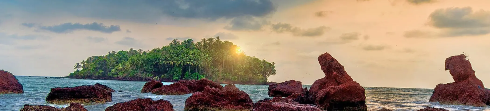

Experience A Slice Of Heaven In Kerala With These Top Kannur Tourist Places
1. St. Angelo Fort
Considered as one of the most historic sites in Kannur, the St. Angelo Fort was constructed by the first Portuguese viceroy of India. The fort is triangular in shape appears as a massive yet magnificent structure standing at the helm of the ruthless sea.
Timings: 8 AM to 6 PM, every day
2. Muzhappilangad Beach
Famous as Kerala’s only drive-in beach, the Muzhappilangad offers some of the most stunning views of the yellow and orange sun setting along the golden sandy beaches of Malabar coast.
Timings:No timing restrictions
3. Palakkayam Thattu
Palakkayam Thattu is one of the alluring places to visit in Kannur near the Western Ghats because of the verdant greenery and dizzying height of about 3350 feet above the sea level. It also happens to be one of the most visited hill stations in the state of Kerala. Populated by dense forests and several hillocks, the quaint hamlet is a favoured destination for avid trekkers.
Timings: 5:00 AM to 9:00 PM
4. Vismaya Water Park
Vismaya Water Park is one of the most visited tourist places in Kannur. The water park found its way into the limelight in the year 2008 by the Malabar Tourism Development Co-operative Limited (MTDC) and since then it has been boasting with its world-class architecture of splash pools, amusement rides, restaurants, casual shops, prayer halls, and conference halls that the tourists enjoy.
Timings: Monday - Friday 11:00 AM to 6:00 PM (Except holidays and peak season)
Sundays & Holidays: 10:30 AM to 6:00 PM
5. Mapilla Bay
Situated near the famous St Angelo’s fort, the Mapilla Bay a natural yet revamped fishing harbour offering spectacular views of the pristine Arabian Sea waters. The bay holds historical significance because of the Indo-Norwegian pact under which it was modernised.
Timings :1 AM to 10.55 PM, every day.